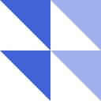
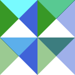

Composite Operations
The CompositeOperation type represents the Porter-Duff operators, or the modes of generalized alpha compositing.
The general form of the Porter-Duff equation is:
αo = αsrc × Fa + αb × Fb
co = αsrc × Fa × Csrc + αb × Fb × Cb
Co = co / αowhere:
αois the output alphaαsrcandαbare the source alpha and backdrop alphaFaandFbare defined by the operator in usecois the output color pre-multiplied with the output alphaαoCsrcandCbare the source color and backdrop colorCois the output color
Note that the "destination" means the "backdrop", not the "output" in this context.
The following two images are used as examples below.
| Destination (backdrop) | Source |
|---|---|
 |  |
clear
| Result |
|---|
ColorBlendModes.CompositeOperations.CompositeClear — ConstantCompositeClearA basic Porter-Duff operator with the fractional terms Fa = 0; Fb = 0. The composite result is completely transparent.
copy
| Result |
|---|
ColorBlendModes.CompositeOperations.CompositeCopy — ConstantCompositeCopyA basic Porter-Duff operator with the fractional terms Fa = 1; Fb = 0. The composite result is the copy of source.
Even if the source alpha is zero, the color components are not cleared.
destination
| Result |
|---|
|  |
ColorBlendModes.CompositeOperations.CompositeDestination — ConstantCompositeDestinationA basic Porter-Duff operator with the fractional terms Fa = 0; Fb = 1. The composite result is the copy of destination (backdrop).
Even if the destination alpha is zero, the color components are not cleared.
source-over
| Result | SVG |
|---|---|
 |  |
ColorBlendModes.CompositeOperations.CompositeSourceOver — ConstantCompositeSourceOverA basic Porter-Duff operator with the fractional terms Fa = 1; Fb = 1 - αsrc. This means the simple alpha compositing.
destination-over
| Result | SVG |
|---|---|
ColorBlendModes.CompositeOperations.CompositeDestinationOver — ConstantCompositeDestinationOverA basic Porter-Duff operator with the fractional terms Fa = 1 - αb; Fb = 1.
source-in
| Result | SVG |
|---|---|
ColorBlendModes.CompositeOperations.CompositeSourceIn — ConstantCompositeSourceInA basic Porter-Duff operator with the fractional terms Fa = αb; Fb = 0.
destination-in
| Result | SVG |
|---|---|
ColorBlendModes.CompositeOperations.CompositeDestinationIn — ConstantCompositeDestinationInA basic Porter-Duff operator with the fractional terms Fa = 0; Fb = αsrc.
source-out
| Result | SVG |
|---|---|
 |
ColorBlendModes.CompositeOperations.CompositeSourceOut — ConstantCompositeSourceOutA basic Porter-Duff operator with the fractional terms Fa = 1 - αb; Fb = 0.
destination-out
| Result | SVG |
|---|---|
 |
ColorBlendModes.CompositeOperations.CompositeDestinationOut — ConstantCompositeDestinationOutA basic Porter-Duff operator with the fractional terms Fa = 0; Fb = 1 - αsrc.
source-atop
| Result | SVG |
|---|---|
 |  |
ColorBlendModes.CompositeOperations.CompositeSourceAtop — ConstantCompositeSourceAtopA basic Porter-Duff operator with the fractional terms Fa = αb; Fb = 1 - αsrc.
destination-atop
| Result | SVG |
|---|---|
ColorBlendModes.CompositeOperations.CompositeDestinationAtop — ConstantCompositeDestinationAtopA basic Porter-Duff operator with the fractional terms Fa = 1 - αsrc; Fb = αb.
xor
| Result | SVG |
|---|---|
ColorBlendModes.CompositeOperations.CompositeXor — ConstantCompositeXorA basic Porter-Duff operator with the fractional terms Fa = 1 - αb; Fb = 1 - αsrc.
lighter
| Result | SVG |
|---|---|
|  |
ColorBlendModes.CompositeOperations.CompositeLighter — ConstantCompositeLighterA basic Porter-Duff operator with the fractional terms Fa = 1; Fb = 1.